Totality Finance
User Handbook & Quick-Start Operations Manual
Table of Contents
📌 1. Welcome & 3-Step Setup
Welcome to Totality Finance! This platform is a serverless, browser-driven financial cockpit configured with custom branding, detailed expense categories, automated recurring syncs, and advanced decision-making simulators.
If you are opening the application for the first time, get configured in under 3 minutes:
Verify Directory
Navigate to Setup & Config to set your custom spending categories, banks, and active income sources.
Adjust Budgets
Set a target limit for your categories. Categories with Rs. 0 budgeted remain inactive but alert you if expenses are logged.
Record Transaction
Enter your active transaction ledger. Automatic flows (subscriptions/incomes) will generate up to today's local date.
📊 2. Personal Finance Dashboard Overview
The main **Dashboard** acts as your high-level control room. It consolidates monthly financial indicators (Total Income, Total Spent, Net Savings, Savings Rate) alongside visual charts and active summaries:
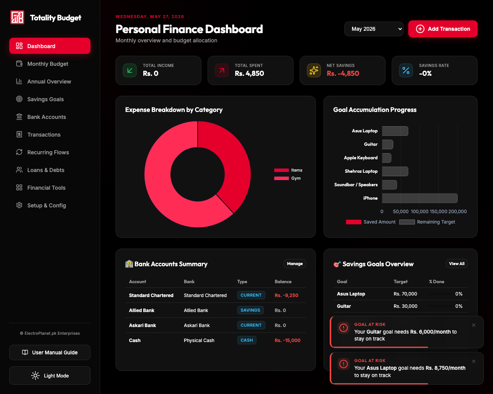
Key Dashboard Elements
- Cumulative Summary Cards: Track Net Savings in real-time. If you run a monthly deficit, the Net Savings card automatically updates to a highlighted Red state.
- Bank Directory Preview: View cash balances at a glance, styled dynamically to reflect fund safety.
- Goal Tracker Preview: Review the active progress bar of your topmost savings goals.
- Top-bar Masked Balances: Check your Net Cash Balance and your active Daily Spend Acc. balances at the top center of the dashboard. Click the privacy eye icon (👁️) to mask or unmask these values; visibility preferences are persisted in your browser's local storage.
Totality features a sleek, non-blocking toast notification system. Critical actions (e.g. adding transactions, adjusting recurring flows, or updating savings goals) trigger self-dismissing alerts at the bottom right, keeping you informed without disrupting your workflow.
💸 3. Monthly Budget Planner
Toggle to the **Monthly Budget** tab to allocate resources and review actual spending margins. The budget planner features an locked, zero-shift table layout:
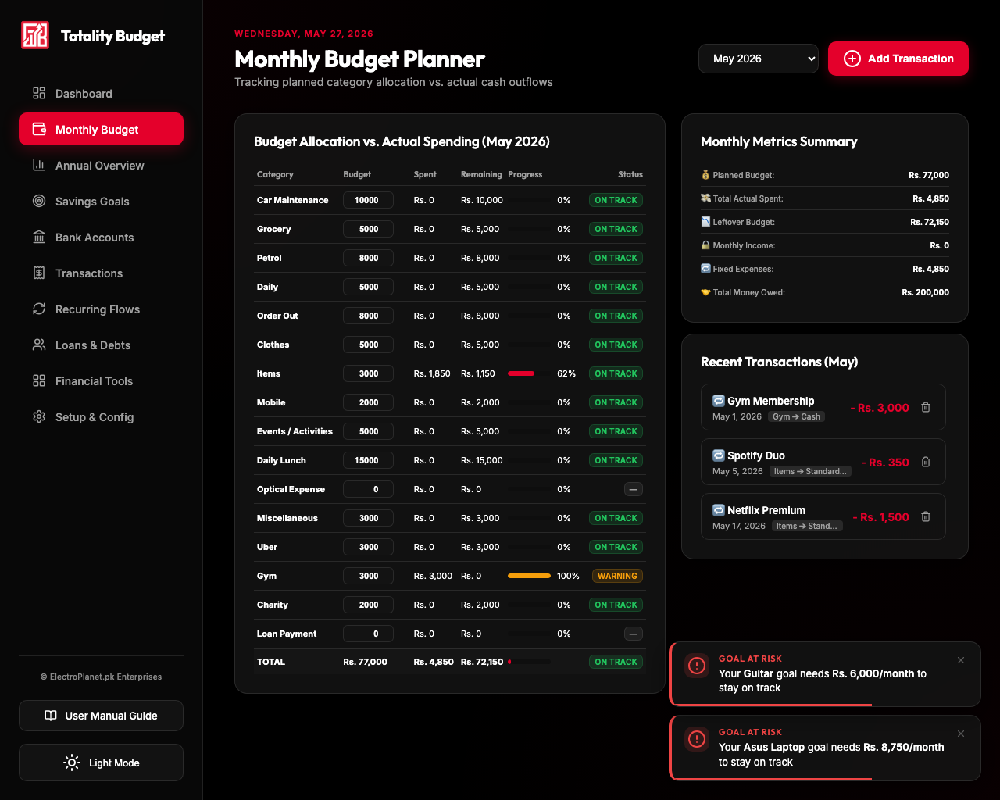
Allocations & Over-Budget Warnings
Double-click inside any cell in the Budget column to update a target limit. The column structure remains locked in-place to prevent layout shifting. If actual spending on a category exceeds its budget (or if a transaction is recorded on a Rs. 0 budget category), the status tag instantly alerts you as 🚨 Over Budget.
In Light Mode, all editable budget cells utilize a premium soft pink background (#fff0f2) and border to separate inputs visually from surrounding numeric values.
🔁 4. Joint Recurring Flows (Inflows & Outflows)
The joint **Recurring Flows** panel unifies fixed incomes and fixed expenses into a single processing center. Rather than logging repeating utilities manually, Totality auto-generates ledger events based on custom billing days.
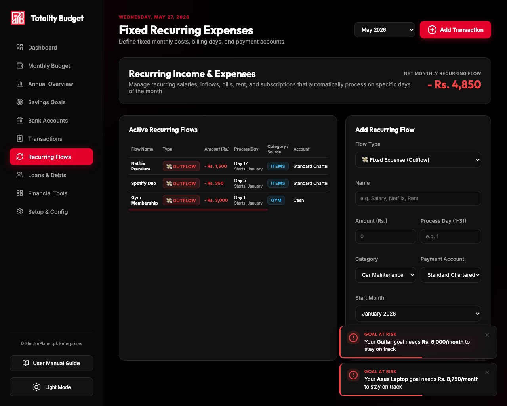
Flow Management Features
- Flow Types: Declare flows as either Fixed Income (Inflow) or Fixed Expense (Outflow). Inflow cards display clean green amount badges, while outflows render in warning red.
- Net Monthly Flow Scorecard: Calculates your monthly fixed surplus or deficit before variable costs are registered.
- Start Month & Pruning: Declare when a recurring flow starts. The app automatically logs historic occurrences up to today's date, and automatically prunes old logs if start dates shift.
🤝 5. Credits & Debts Ledger
The **Credits & Debts Ledger** helps you manage liabilities (money you owe to others) and assets (credits/receivables owed to you by others) inside a consolidated table:
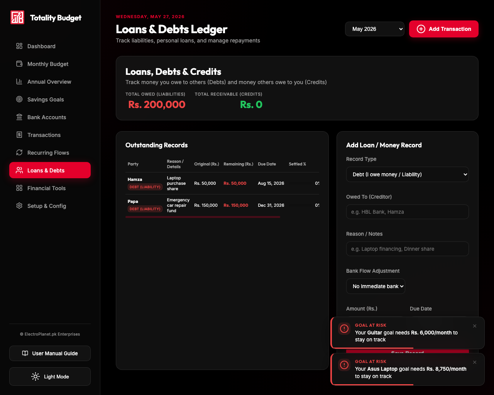
Asset and Liability Distinctions
- Record Types: Save entries as either a Debt (liability, you owe) or a Credit (receivable, others owe you). Credit balances display in green, and debt balances display in red.
- Repayment & Receipt Actions: Click the action button beside a record:
- For Debt: Clicking Repay opens the ledger modal as an expense to pay down your liability.
- For Credit: Clicking Receive opens the ledger modal as an income to record funds returned.
When adding a record, you can choose to make an immediate Bank Flow Adjustment. Taking a cash loan instantly deposits the amount to your chosen bank account (recording an inflow transaction). Lending cash immediately deducts the amount from your chosen bank account (recording an outflow transaction).
📅 6. Annual Summary Overview
The **Annual Summary** provides long-term financial trends across the current calendar year. It tallies YTD balances, cumulative savings, and tracks progress across categories:
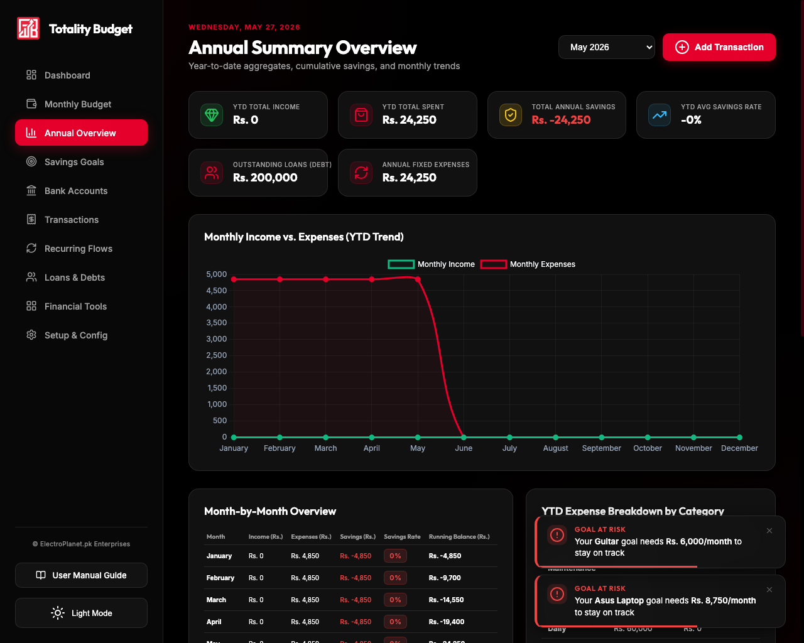
Long-term Performance Tracking
Review the double-bar chart showing actual Income vs. actual Spending alongside a Net Savings percentage line. As you select different months, annual aggregates recalculate dynamically, enabling long-term forecasting.
🎯 7. Savings Goals & Suggestion Engine
The **Savings Goals Vault** helps you build wealth by locking down funds for specific items. The vault supports inline creation to streamline configuration:
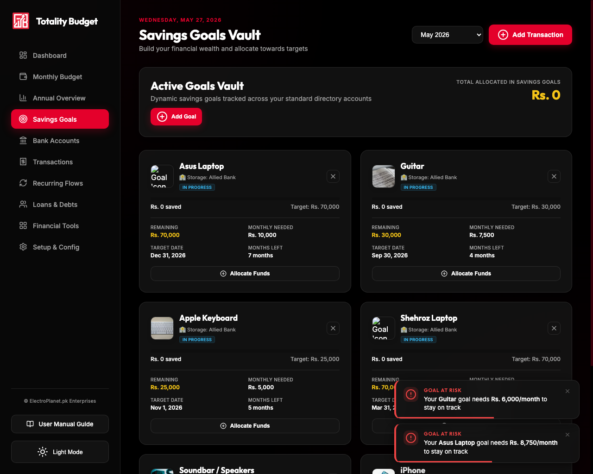
Smart API Autocomplete
When typing in the Add Savings Goal modal, background workers query the DuckDuckGo Instant Answer API. If a price is detected in USD, it is converted dynamically at the active rate to PKR and displayed as a clickable suggestion pill. Selecting the pill fills the budget field instantly. The card then queries Wikipedia for catalog cover photos.
If the goal name contains keyboard/piano brand terms (e.g. Yamaha, Casio, Roland, Korg), the system will suggest catalog price fallbacks and assign musical graphics while ignoring transport vehicles.
🛠️ 8. Consolidated Financial Tools Panel
The **Financial Tools** tab acts as an advanced sandbox containing four specialized dashboards:
8.1 Smart Insights & Health Score
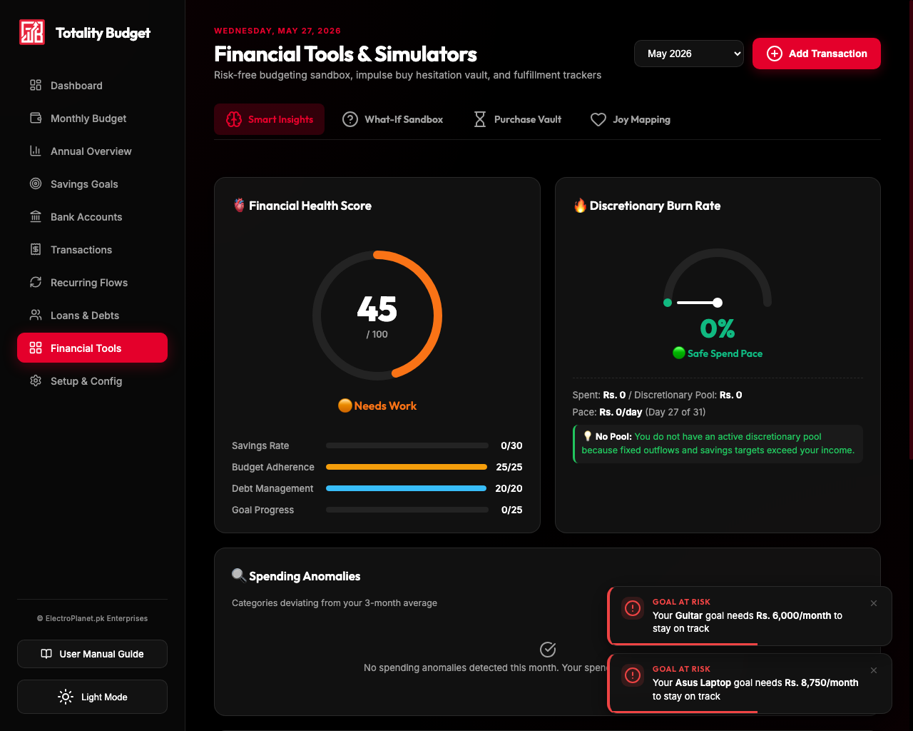
Smart Insights assesses your overall budget compliance. It features a radial Financial Health Score gauge, a Discretionary Burn Speedometer comparing spend pace to calendar days, and rolling anomaly cards pointing out categories experiencing spending spikes.
8.2 What-If Sandbox Simulator
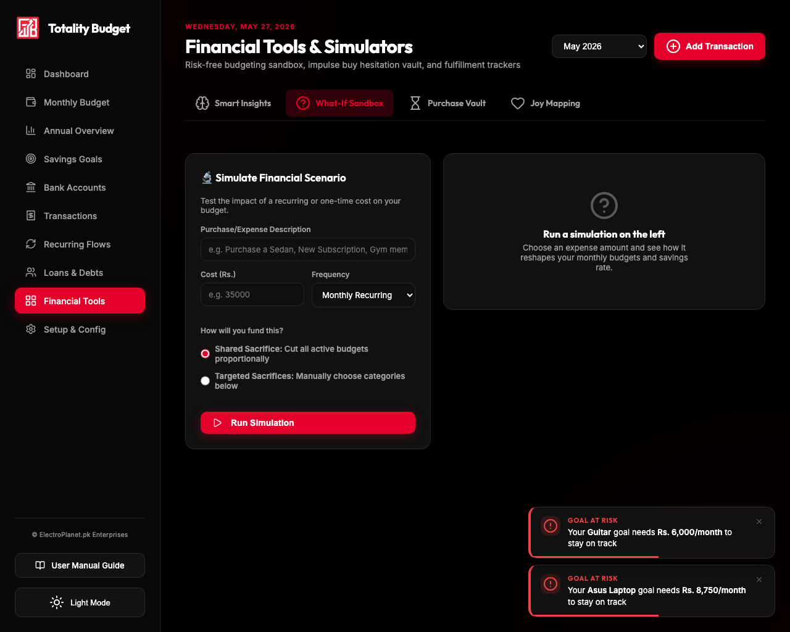
Hypothetically model costs before spending. Under **Shared Sacrifice**, the simulator calculates equal, proportional cuts across all budgets. Under **Targeted Sacrifice**, you select categories to divide the cost, checking proposed balances in real-time.
8.3 Impulse Buy Hesitation Vault
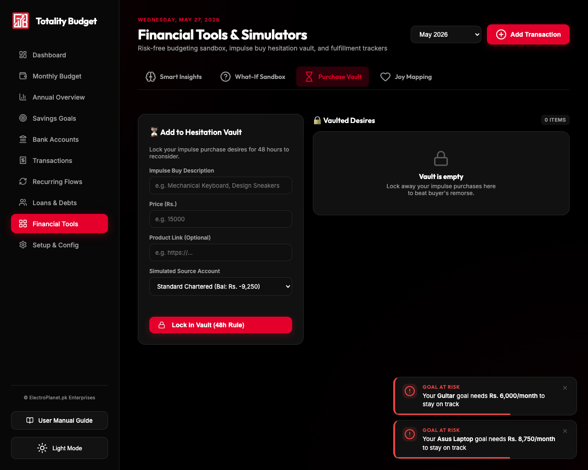
Lock impulses away for 48 hours. The vault translates the cost of the item into equivalent work hours based on your salary, displaying ticking cool-down countdown timers. Use the "Test Unlock" button during setup to bypass the countdown for testing.
8.4 Joy Mapping & End-of-Month PDF Reports
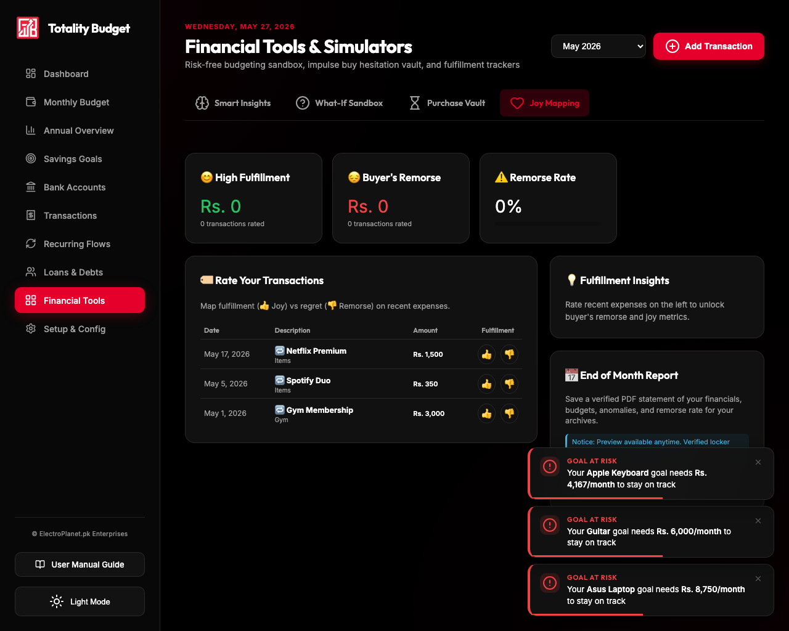
Map your purchases to 👍 Joy or 👎 Remorse. The system tracks your monthly remorse rate and category regrets. You can click Download PDF Report to output a clean statement detailing budget scores and ledger activities.
⚙️ 9. System Configurations
The **Setup & Config** page is where you configure the base parameters of the system. Modify, delete, or append data fields:
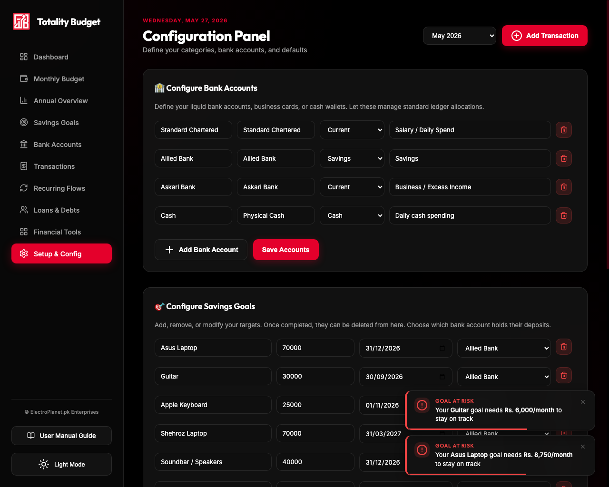
| Configuration Card | Description & Operations |
|---|---|
| Expense Categories | Manage category tags. Creating new categories automatically updates budget spreadsheets. |
| Income Sources | Add source names to categorize fixed and variable incoming cash flows. |
| Bank Directory | Declare Bank Names, Account Types (Savings, Current, Cash), and purposes. Balance aggregates sync in-place. |
| Data Backup | Export your entire workspace state as a JSON file, or import backups to restore states instantly. |